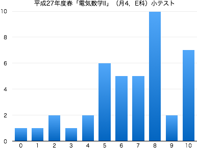
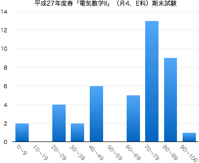

連絡事項
授業の目的
電気電子工学では、指数関数・対数関数やベクトルを用いて記述される現象が数多く見受けられ、その知識は欠かせない。
専門科目の理解に必要とされる読解力・計算力を身に付けるために、指数関数・対数関数およびベクトルについて学習する。基礎的な計算技法に習熟するとともに、電気数学Ⅰで学習する三角関数・複素数との関係についても理解する。
達成目標
- 指数・対数の性質を理解し、それを利用して指数や対数の値を求めることができる。
- 指数関数・対数関数の定義や性質を理解し、グラフの概形を描くことができる。
- 指数方程式・対数方程式の解を求めることができる。
- ベクトルの定義を理解し、基本的な演算ができる。
- ベクトルの平行条件・垂直条件を理解し、適用することができる。
これまでの授業と今後の予定
| 第1回 |
4月 |
13日（月） |
ガイダンス |
| 第2回 |
|
20日（月） |
指数法則，累乗根 II-1 10.1 10.2 |
| 第3回 |
|
27日（月） |
累乗根の性質 II-1 ，指数の拡張 II-2 10.1 10.2 |
| 第4回 |
5月 |
11日（月） |
指数関数とそのグラフ II-3 |
| 第5回 |
|
18日（月） |
指数方程式 II-4 ，対数とその性質 II-5 10.3
|
| 第6回 |
|
25日（月） |
底の変換公式 II-5 10.3 ，対数関数とそのグラフ II-6 |
| 第7回 |
6月 |
1日（月） |
対数方程式 II-7 ，問題演習 |
| 第8回 |
|
8日（月） |
小テスト（問題 | 解答 | 得点分布） |
| 第9回 |
|
15日（月） |
ベクトルと空間の座標 II-8 13.1 13.2 |
| 第10回 |
|
22日（月） |
点の対称移動 II-8 13.1 13.2 ，ベクトルの演算 II-9 13.4 |
| 第11回 |
|
29日（月） |
ベクトルの基本ベクトル表示 II-10 13.3 |
| 第12回 |
7月 |
6日（月） |
ベクトルの成分表示 II-11 |
| 第13回 |
|
13日（月） |
内積とその性質 II-12 13.5 |
| 第14回 |
|
20日（月） |
これまでのまとめ，問題演習 |
|
|
27日（月） |
期末試験（得点分布） |
教科書・参考文献について
- 森武昭・大矢征著 『電気電子工学のための基礎数学(第2版)』 森北出版 » リンク
- 小冊子 『電気数学（2015年度版）』
評価について
- 期末試験80%（科目共通試験），小テスト・演習課題など20%の割合で評価する．
- 毎回の授業で問題演習を実施する．手順は以下；
- 教科書等の問題を指定し，指定の答案用紙に解答して提出してもらいます（指定の用紙しか受け付けません）．
- 解答後は必ず答え合わせをして，正しくない場合は途中式のどこが間違えているか探して訂正してください（正答をただ書き写すことではありません）．
- 授業時間内に終わらない場合は，次回の授業の前々日（ただし土日を除く）の17:00までに私に直接手渡すか，研究室のドアの封筒に提出してもらいます．提出期限が過ぎた答案は一切受け取りません．
- 1回の提出につき1点を加点します（合計点数は最大10点）．
ただし，不完全な答案（解答されていない問題がある，答え合わせをしていない，誤答が正されていない，等々の不備）は加点しません．
- 中間期に小テスト（ミニ中間試験）を実施する（10点）．
- 期末試験を実施する（100点満点）．
- $\min\{10,$(課題提出回数)$\}+$(中間小テストの点数)$+$(期末試験の点数)$\times 0.8\geqq 60$ で合格とする．
その他
- 平成27年度のスチューデントアワー (SH) は月火水木の昼休みです．
-
Twitterでも，授業に関する情報を発信していきます（ハッシュタグは #15Smeee2E ）．質問，意見などのリプライを歓迎します．
-
授業に対する基本的な考え方にも目を通しておいてください．
- 授業の欠席について
- 出席点というものがないので，休んだことの届け出は基本的にしなくて結構です．友人にノートを写させてもらうなどの対処を各自行ってください（課題の有無も確認してください）．
- 休んだ回の課題を提出する意思があるならば，メール等で連絡の上，答案用紙を受け取りに来てください（またはここからダウンロードして印刷）．レポート用紙やルーズリーフでの提出は原則不可です．
- 病欠等で数日休んでしまった場合は，課題の提出期限を猶予します．その際は，答案用紙を受け取る際に欠席届け等を見せてください．
試験の得点分布と評価など
- 小テスト：問題と解答（平均点 6.6点）

- 期末試験（平均点 60.5点）
|  |
| 履修者 | 42 |
| 受験者 | 42 |
| AA | 2 |
| A | 9 |
| B | 12 |
| C | 5 |
| D | 14 |
| 未受験 | 0 |
| 単位修得者 | 28 |
| 単位修得率 | 67.7% |
|